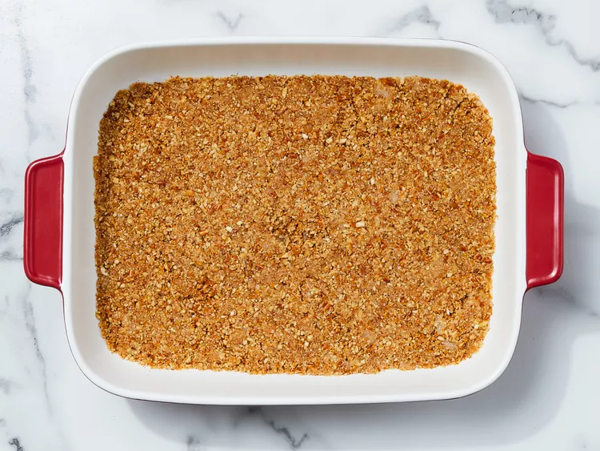
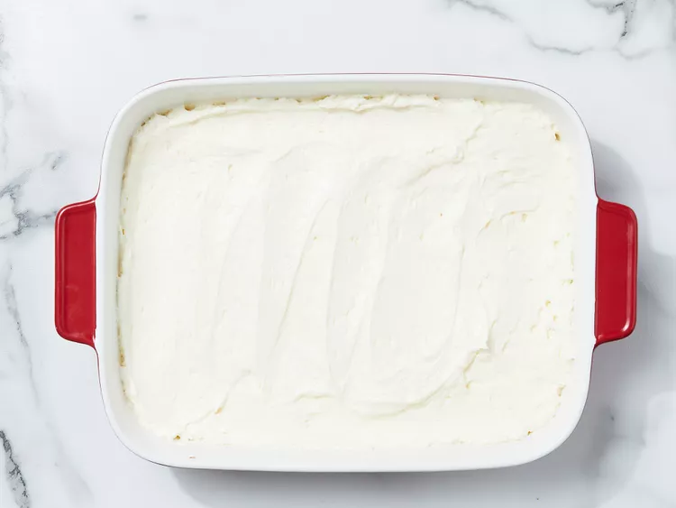
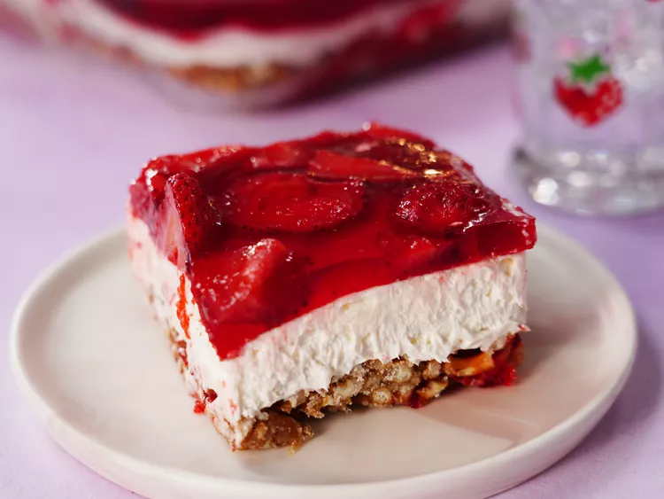

Homepage
Strawberry Pretzel Salad
Description
This three-layer strawberry pretzel dessert salad includes a pretzel crust, cream cheese center, and strawberry top.
Prep Time:
15 mins
Cook Time:
10 mins
Additional Time:
1 hr 30 mins
Total Time:
1 hr 55 mins
Servings:
16
Yield:
1 (9x13-inch) dish
Ingredients
- 1 ½ cups crushed pretzels
- cup butter, melted
- 4 ½ tablespoons white sugar
- 2 (8 ounce) packages cream cheese, softened
- 1 cup white sugar
- 1 (8 ounce) container frozen whipped topping, thawed
- 2 cups boiling water
- 1 (6 ounce) package strawberry flavored Jell-O
- 1 (16 ounce) package frozen strawberries
Directions
Step 1

Gather ingredients, and preheat the oven to 350 degrees F (175 degrees C).
Step 2

Mix together pretzels, melted butter, and 4 1/2 tablespoons sugar in a medium bowl until well combined. Press into the bottom of a 9x13-inch dish.
Step 3

Press into the bottom of a 9x13 inch pan. Bake for 10 minutes, or until lightly toasted. Set aside to cool completely.
Step 4

In a medium bowl, beat the sugar and cream cheese until smooth.
Step 5

Fold in whipped topping and spread evenly over the cooled crust. Refrigerate until set, about 30 minutes.
Step 6

Stir together boiling water and gelatin mix in a second large bowl. Mix in frozen strawberries; stir until thawed.
Step 7

Pour over cream cheese mixture in the dish. Refrigerate until completely chilled, at least 1 hour.
Step 8

Refrigerate until completely chilled, at least 1 hour. Slice and enjoy!